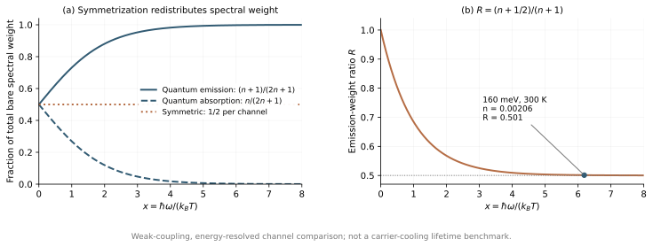
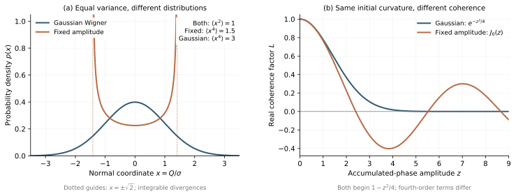

HefeiNAMD Series - Part IV
Quantum Nuclear Fluctuations
Part III constructed an electronic Hamiltonian from reference Bloch states, electron-phonon coupling (EPC), and a prescribed nuclear path. Its analytic phonon driver contains a factor \(\sqrt{n+1/2}\). Does that make the nuclei quantum? The answer requires separating three questions: how large the nuclear fluctuations are, how they exchange energy with electrons, and which nuclear ensemble is actually sampled.
The zero-point term carries real physical information: it retains a finite harmonic displacement scale as temperature approaches zero. However, a fluctuation scale alone does not specify a quantum bath. We follow the active path of the public HefeiNAMD-EPC implementation, then use harmonic identities to identify what that scale establishes. The figures below evaluate these identities; they are not new material simulations or measurements of carrier lifetimes.
1. A quantum fluctuation scale can coexist with CPA
In the classical path approximation (CPA), the nuclear motion used to drive the electrons is independent of the evolving electronic state. The path may come from a stored molecular-dynamics trajectory or an analytic mode expansion. Its defining feature is the absence of electronic feedback into that path.
That is the structure of the inspected default EPC route. The main program selects runSH_EPC. Its coordinate update multiplies preset mode amplitudes by fixed harmonic phases before electronic propagation:
The code also accumulates phonon changes assigned to switches. Those records do not update the amplitudes driving the next step. The repository contains a separate on-the-fly routine, but its call is commented out in the inspected main program. Its presence does not establish feedback in the default calculation.
CPA and nuclear quantum effects are therefore separate choices. Quantum-informed initial widths can be used on a prescribed path. Stochastic electronic switches can also be performed on that path. Neither operation by itself introduces a force or occupancy feedback into the nuclear motion. The real-space CPA construction is discussed in Part II; here the path is organized by harmonic phonon modes.
2. What the zero-point term supplies
Consider one independent, stable, real, mass-weighted normal mode. This is the coordinate convention used in Part III. Its conjugate momentum is \(P=\dot Q\), and
The quantum thermal coordinate variance and the classical canonical variance are
For an ordinary length coordinate with effective mass \(M\), divide these mass-weighted variances by \(M\). At low temperature the quantum width remains finite; at high temperature it approaches the classical result. Thus high-frequency modes can retain zero-point fluctuations even when their thermal excitation is negligible.
In the default analytic driver, two equal factors \(\sqrt{n+1/2}\) evolve with opposite frequencies. For the real-mode illustration this gives
A uniform phase average gives \(\overline{Q}=0\) and \(\overline{Q^2}=A^2/2=\sigma^2\). The amplitude therefore has the correct harmonic quantum variance under that averaging assumption. The actual driver initializes equal real factors and uses initial-time offsets; it does not independently draw Gaussian coordinates and momenta, or random phases for every mode.
These fluctuations enter the time-dependent EPC Hamiltonian throughout propagation. They can contribute to electronic energy fluctuations, mixing, and decoherence. Matching their scale is a substantive nuclear quantum correction, although it does not establish the accuracy of every resulting electronic observable. Removing \(1/2\) while retaining the Bose occupation would eliminate this zero-point width; it would not produce the full classical canonical ensemble, whose mode-energy scale is \(k_BT\).
3. Why absorption and emission require more information
The variance is an equal-time quantity. Energy exchange depends on a two-time correlation and on its operator order. Here we put the later-time operator first:
The companion article on ordered and Kubo correlations introduces the reverse product order; for this autocorrelation it is the complex conjugate. Keeping this convention explicit prevents an accidental exchange of frequency signs.
The phase-averaged real harmonic driver reproduces \(C_{\mathrm{sym}}\). The commutator contributes the imaginary sine term. With the Fourier convention \(S_{>}(\Omega)=\int dt\,e^{i\Omega t}C_{>}(t)\), the positive-frequency peak carries \(n+1\), while the negative-frequency peak carries \(n\). These are the bath weights relevant to downward electronic energy loss and upward energy gain, respectively.
| Driver or bath | Electronic absorption weight | Electronic emission weight | Low-temperature limit |
|---|---|---|---|
| Equal amplitudes without zero-point term | \(n\) | \(n\) | Both vanish |
| Equal amplitudes with zero-point term | \(n+1/2\) | \(n+1/2\) | Both remain finite |
| Ordered quantum harmonic correlation | \(n\) | \(n+1\) | Emission remains; absorption vanishes |
The table compares frequency weights before additional switching corrections. The symmetry already exists without \(1/2\); the zero-point term changes the fluctuation strength. It is consequently inaccurate to identify that term as the cause of lost absorption/emission asymmetry. Wigner representation itself does not discard quantum mechanics either: operator products and response must be handled consistently rather than replaced indiscriminately by ordinary products of trajectory values.
In the inspected program, both broadened scattering channels use the same \(n+1/2\) amplitude factor, with energy matching near opposite phonon energies. An additional Boltzmann correction suppresses uphill electronic switches. That supplies a thermal asymmetry, but does not on its own prove the full quantum correlation or detailed balance of the combined algorithm. Single-carrier thermal equilibrium also concerns Boltzmann populations; a Fermi-Dirac claim additionally requires a many-fermion occupation model.
4. The conditional factor of two
A useful diagnostic follows if we deliberately restrict the comparison to weak coupling, matched matrix elements and final states, a stationary phase average, and a single energy-resolved resonant emission channel. In the Golden-rule limit, let \(K\) collect the identical coupling and energy-selection factors. Then

The low-temperature limit gives a half-weight. If uphill transitions are suppressed and this one process controls exponential cooling, its lifetime would double in that restricted rate model. A high-frequency mode can reach this regime at room temperature. Nevertheless, the comparison is between Golden-rule approximations, not an unrestricted exact quantum solution, and it is not yet a statement about the program's full cooling curve.
In particular, it cannot describe the transfer during every femtosecond. To see why, take the matched model \(\hat H_{\mathrm{int}}=g\sigma_x(\hat b+\hat b^\dagger)\), an initially excited electron, and a thermal oscillator. Let \(\Omega=(\epsilon_i-\epsilon_j)/\hbar>0\), and define
Second-order perturbation theory for the full interaction, before selecting a resonant frequency, gives
At strictly short times both integrals approach \(t\), so both expressions have the same leading term, \(g^2(2n+1)t^2/\hbar^2\). Energy resolution later separates the two channels. This explains how equal initial curvature and a different resonant emission weight can coexist. The identity \((n+1)+n=2(n+1/2)\) likewise equates integrated bare weights, not total electronic scattering rates after different final-state constraints are applied.
The code adds a further distinction. Its active switching routine combines electronic coefficients with precomputed real scattering weights, rather than using the instantaneous complex Hamiltonian element in the elementary current formula. Part III derives that difference. A universal factor-of-two correction to its reported lifetime therefore does not follow from the weight ratio alone.
A proposed rate correction must also account for the existing thermal factor. In the simple resonant model, a symmetric uphill rate already multiplied by \(e^{-\beta\hbar\omega}\), and then multiplied again by \(n/(n+1/2)\), becomes \(Kn e^{-\beta\hbar\omega}\), rather than the target \(Kn\). This double counts thermal suppression. Correct quantum rates can arise from a Hermitian Hamiltonian in the joint electron-phonon space; assigning unequal frequency amplitudes to a single classical coordinate is not a substitute for constructing that dynamics.
5. Equal variance, different nuclear ensembles
Operator order and nuclear sampling are different issues. Even if we only seek the symmetrized harmonic fluctuations, a correct variance does not uniquely fix the distribution of initial conditions. For fixed \(A=\sqrt2\,\sigma\) and uniform \(\varphi\), the transformation \(Q=A\cos\varphi\) yields
The first is the arcsine distribution: a harmonic trajectory moves slowly near its turning points, producing integrable endpoint singularities. The second is the coordinate marginal of the harmonic thermal Wigner distribution, including the ground state. They have equal second moments, but
The fixed-amplitude fourth moment is half the Gaussian value. These are distributions of one normal coordinate. An atomic displacement or electronic gap generally combines many modes, so a U-shaped single-mode marginal does not imply a double-peaked atomic distribution or an artificial electronic pseudogap in every material.
The full thermal harmonic Wigner distribution is Gaussian in both quadratures. A compact equivalent sampler uses two independent uniform random numbers, \(\xi\in(0,1]\) and \(u\in[0,1)\):
Harmonic propagation then gives \(Q(t)=2\ell\sqrt J\cos(\omega t+\varphi)\). The initial quadratures are independent Gaussians with variances \(\sigma^2\) and \(\omega^2\sigma^2\). Thus every equal-time coordinate moment of the harmonic thermal state is reproduced, not only its width. The Hessian-to-Wigner article supplies the normal-mode and Cartesian reconstruction steps; here the new issue is how that ensemble differs from a fixed-radius phase-space orbit.

6. What higher moments change
For independent harmonic modes with uniform phases, fixed-radius sampling and Gaussian Wigner sampling have the same classical two-time coordinate correlation. Consequently they can agree in linear-coupling, second-order perturbative calculations performed with that classical correlation. Equality of the variance alone would not be enough for arbitrary dynamics, and agreement between these two samplers does not establish the ordered quantum correlation.
Pure dephasing provides an explicit higher-order distinction. Let a prescribed real mode modulate an electronic energy gap by \(\delta\epsilon(t)=\lambda Q(t)\). The coherence factor is the characteristic function of the accumulated phase:
For the fixed-radius ensemble the integrated phase is \(z(t)\cos(\varphi+\omega t/2)\), with
Here \(J_0\) is a Bessel function. Its expansion and the Gaussian expansion agree at order \(z^2\), but differ at order \(z^4\). Figure 2 shows the resulting departure. A Gaussian second-cumulant expression is exact for the Gaussian prescribed noise; applying it to fixed-radius noise discards nonzero higher cumulants. This comparison concerns the coherence generated by two external classical ensembles. A full quantum dephasing calculation must also keep the appropriate operator ordering and response.
Higher-order scattering similarly depends on multi-time correlations, intermediate electronic states, and operator order. A factor of two in an equal-time fourth moment is a diagnostic of different ensembles, not a universal factor of two in all two-phonon rates. Snapshot energy histograms and dynamical spectral functions are also different observables.
The Gaussian position marginal extends beyond the turning points of an orbit with the mean zero-point energy. That stationary forbidden-region probability is not itself barrier-crossing dynamics. Wigner initial conditions followed by classical trajectories do not automatically supply quantum tunneling. Nor does a finite zero-point variance alone imply a nonzero irreversible linewidth: an isolated harmonic mode can produce recurrences.
7. What a Wigner implementation must change
Sampling two Gaussian quadratures is inexpensive, and each harmonic path remains analytic. The total cost depends on how many independently sampled nuclear paths need separate electronic propagation. In the current loop structure, a shared coefficient propagation precedes the stochastic trajectory loop. Increasing the number of switches on that same driver does not create independent Wigner nuclear samples. Distinct drivers generally require distinct electronic propagations and an assessment of sampling error.
For crystal modes, sampling must preserve \(Q_{-\mathbf q,\nu}=Q_{\mathbf q,\nu}^{*}\) in a compatible eigenvector gauge. Independent real sine and cosine coordinates are a convenient choice; drawing unrelated complex opposite-q coordinates would violate real atomic displacements. The sampled coordinates must also be connected consistently to both the Hamiltonian construction and the separately defined switching model. Replacing one initialization factor without checking those dependencies is insufficient.
Finally, \(J\) is a continuous phase-space sampling variable, not the integer number of phonons present in that trajectory. Even a ground-state Wigner ensemble has a distribution of classical point energies, although the quantum ground state has a sharp energy. The point-energy discussion explains this distinction. Setting a trajectory occupation to \(J-1/2\), then adding or removing one whenever an electron switches, is not a justified quantum feedback rule. A model for hot-phonon feedback must specify the evolving bath state, energy exchange, and sampling prescription together.
8. Which nuclear quantum effects are covered?
| Physical content | Inspected analytic EPC route | What an improved initial sampler changes |
|---|---|---|
| Harmonic zero-point displacement scale | Included for retained modes through \(n+1/2\) | Retains that scale |
| Bose temperature dependence | Included in preset amplitudes | Retains it in the ensemble widths |
| Full harmonic thermal coordinate distribution | Fixed amplitudes do not supply it | Gaussian Wigner sampling supplies its equal-time statistics |
| Quantum absorption/emission asymmetry | Symmetric amplitudes plus an additional thermal switching correction | Not restored by Gaussian sampling alone |
| Carrier-induced evolution of the phonon bath | Switch-associated phonon changes are recorded but do not update the driver | Requires a feedback model beyond initialization |
| Tunneling and anharmonic quantum nuclear distributions | Not generated by preset harmonic trajectories | Not supplied by harmonic Wigner initialization alone |
The driver also omits modes below its phonon-energy cutoff. More broadly, linear EPC and harmonic nuclear motion are separate truncations, as derived in Part III. A zero-point amplitude does not by itself establish a complete zero-point band-gap renormalization: the retained electronic response and contributions such as Fan and Debye-Waller terms must be identified. Likewise, a coupling that vanishes at the retained order remains zero when multiplied by a larger coordinate.
Nonharmonic forces and electronic feedback are not exclusively quantum effects. Their absence nevertheless limits which nuclear quantum phenomena this prescribed harmonic model can represent. Electronic wavefunction propagation is quantum, but that fact alone is not evidence that the nuclei undergo complete quantum dynamics.
Conclusions
- The inspected EPC route retains harmonic zero-point and Bose thermal fluctuation scales within CPA. Its nuclear driver remains independent of the evolving electrons.
- Correct symmetrized fluctuations do not by themselves supply the ordered quantum correlation governing absorption and emission. The zero-point term is not the origin of their symmetry.
- A half emission weight follows in a specified Golden-rule limit. A doubled cooling lifetime requires additional dynamical assumptions and has not been established for the complete switching implementation.
- Wigner sampling repairs the independent harmonic thermal initial ensemble. Its benefits, computational cost, and connection to feedback must be assessed separately from quantum energy-exchange statistics.
Code and reproducible checks
The compact diagnostic script generates both figures and numerical checks for the analytic moments, polar Wigner sampler, transition weights, and short-time coefficient. It requires NumPy, SciPy, and Matplotlib:
python assets/code/hefeinamd_nqe_checks.py --output-dir nqes-outputThe checks concern harmonic statistical identities and perturbative formulas stated above. They do not run HefeiNAMD, establish a material-specific lifetime error, or validate a new feedback algorithm.
Sources and related articles
- Z. Zheng et al., Ab initio real-time quantum dynamics of charge carriers in momentum space, Nature Computational Science 3, 532–541 (2023); author manuscript, especially the EPC Hamiltonian and analytic normal coordinate.
- Pinned HefeiNAMD-EPC source. Implementation statements refer to its analytic Type 1 driver and the active main-program route, not every EPC or on-the-fly method.
- Newton-X theoretical background: Wigner distribution, for harmonic thermal coordinate and momentum sampling.
- Ordered and Kubo Correlations, for operator ordering, harmonic spectra, and electronic transition weights.
- From Hessians to Wigner Initial Conditions, for normal-mode reconstruction, thermal sampling, and the interpretation of sampled point energies.